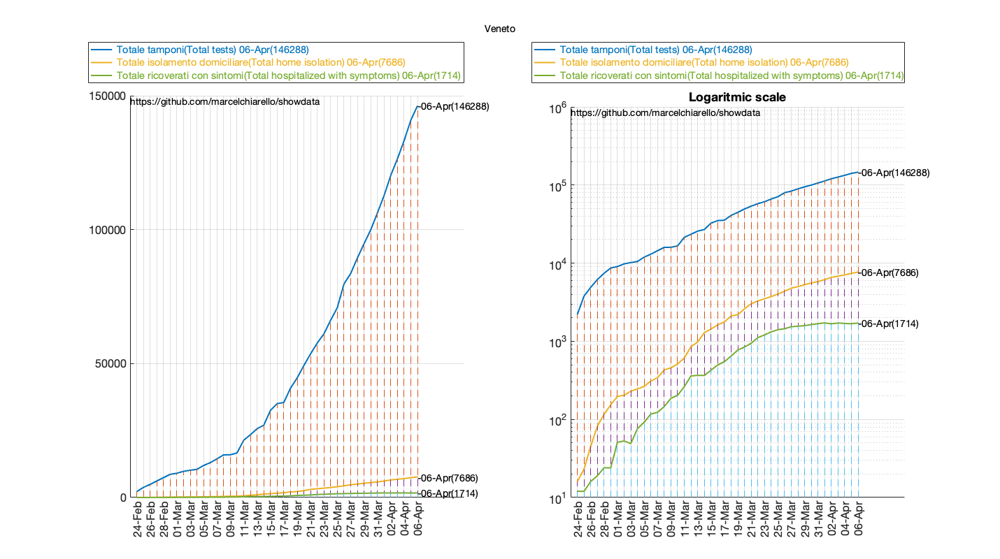
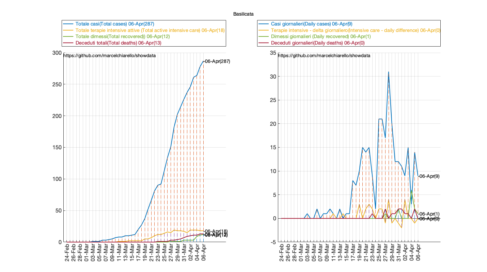

COVID19 DATA PROVINCES AND REGIONS UPDATED TO APRIL 6 2020.
This report is related to data processing on the spread of COVID-19 in Italy and single regions/provinces. Data are provided by the Italian Civil Protection:
"https://github.com/pcm-dpc/COVID-19"
See all reports and articles: marcelchiarello.github.io/showdata
Author: Marcello Chiarello
marcello.chiarello@outlook.com
Contents
DATA PUGLIA
RUN DATA: 06-Apr-2020
Tabella casi giornalieri per la regione Puglia(Daily cases for the region)
TABLE =
6×3 table
province casiGiornalieri casiTotali
_______________________ _______________ __________
"Bari" 17 807
"Barletta-Andria-Trani" 39 177
"Brindisi" 11 257
"Foggia" 41 605
"Lecce" 10 378
"Taranto" 8 190
"Casi giornalieri totali:" "126" " (Region daily cases)"
"Casi regione totali:" "2414" " (Region total cases)"
https://marcelchiarello.github.io/showdata/
Summary =
2×8 table
Casi Attualmente_positivi Morti Guariti Terapia_intensiva Ospedalizzati Ricoverati_con_sintomi Tamponi
____ ____________________ _____ _______ _________________ _____________ ______________________ _______
Totali 2444 2115 195 134 97 722 625 22059
Giornalieri 127 93 13 21 -62 -11 51 1979
Nota: ci sono delle incongruenze tra la somma dei valori delle varie province
ed i valori regionali (provenienti da due diversi file dello stesso database)

DATA LOMBARDIA
RUN DATA: 06-Apr-2020
Tabella casi giornalieri per la regione Lombardia(Daily cases for the region)
TABLE =
12×3 table
province casiGiornalieri casiTotali
_______________________ _______________ __________
"Bergamo" 103 9815
"Brescia" 137 9477
"Como" 89 1473
"Cremona" 27 4260
"Lecco" 34 1712
"Lodi" 23 2278
"Mantova" 40 2084
"Milano" 308 11538
"Monza e della Brianza" 111 3157
"Pavia" 81 2700
"Sondrio" 23 614
"Varese" 102 1293
"Casi giornalieri totali:" "1078" " (Region daily cases)"
"Casi regione totali:" "50401" " (Region total cases)"
https://marcelchiarello.github.io/showdata/
Summary =
2×8 table
Casi Attualmente_positivi Morti Guariti Terapia_intensiva Ospedalizzati Ricoverati_con_sintomi Tamponi
_____ ____________________ _____ _______ _________________ _____________ ______________________ _______
Totali 51534 28469 9202 13863 1343 13257 11914 154989
Giornalieri 1079 345 297 437 26 -69 -95 5005
Nota: ci sono delle incongruenze tra la somma dei valori delle varie province
ed i valori regionali (provenienti da due diversi file dello stesso database)
DATA VENETO
RUN DATA: 06-Apr-2020
Tabella casi giornalieri per la regione Veneto(Daily cases for the region)
TABLE =
7×3 table
province casiGiornalieri casiTotali
_________ _______________ __________
"Belluno" 20 558
"Padova" 119 2863
"Rovigo" 17 203
"Treviso" 14 1726
"Venezia" 62 1487
"Verona" 67 2755
"Vicenza" 57 1704
"Casi giornalieri totali:" "356" " (Region daily cases)"
"Casi regione totali:" "11296" " (Region total cases)"
https://marcelchiarello.github.io/showdata/
Summary =
2×8 table
Casi Attualmente_positivi Morti Guariti Terapia_intensiva Ospedalizzati Ricoverati_con_sintomi Tamponi
_____ ____________________ _____ _______ _________________ _____________ ______________________ _______
Totali 11588 9722 662 1204 322 2036 1714 146288
Giornalieri 362 313 31 18 -7 33 40 5378
Nota: ci sono delle incongruenze tra la somma dei valori delle varie province
ed i valori regionali (provenienti da due diversi file dello stesso database)
 DATA PIEMONTE
RUN DATA: 06-Apr-2020
Tabella casi giornalieri per la regione Piemonte(Daily cases for the region)
TABLE =
8×3 table
province casiGiornalieri casiTotali
______________________ _______________ __________
"Alessandria" 141 1904
"Asti" 13 609
"Biella" 12 583
"Cuneo" 64 1135
"Novara" 22 1008
"Torino" 195 6180
"Verbano-Cusio-Ossola" 63 619
"Vercelli" 42 647
"Casi giornalieri totali:" "552" " (Region daily cases)"
"Casi regione totali:" "12685" " (Region total cases)"
https://marcelchiarello.github.io/showdata/
Summary =
2×8 table
Casi Attualmente_positivi Morti Guariti Terapia_intensiva Ospedalizzati Ricoverati_con_sintomi Tamponi
_____ ____________________ _____ _______ _________________ _____________ ______________________ _______
Totali 12924 10545 1251 1128 438 3922 3484 41123
Giornalieri 562 368 83 111 -6 6 12 2584
Nota: ci sono delle incongruenze tra la somma dei valori delle varie province
ed i valori regionali (provenienti da due diversi file dello stesso database)
DATA EMILIA ROMAGNA
RUN DATA: 06-Apr-2020 Tabella casi giornalieri per la regione Emilia-Romagna(Daily cases for the region) Database Error
DATA CAMPANIA
RUN DATA: 06-Apr-2020
Tabella casi giornalieri per la regione Campania(Daily cases for the region)
TABLE =
5×3 table
province casiGiornalieri casiTotali
___________ _______________ __________
"Avellino" 18 373
"Benevento" 0 108
"Caserta" 8 308
"Napoli" 36 1568
"Salerno" 25 462
"Casi giornalieri totali:" "87" " (Region daily cases)"
"Casi regione totali:" "2819" " (Region total cases)"
https://marcelchiarello.github.io/showdata/
Summary =
2×8 table
Casi Attualmente_positivi Morti Guariti Terapia_intensiva Ospedalizzati Ricoverati_con_sintomi Tamponi
____ ____________________ _____ _______ _________________ _____________ ______________________ _______
Totali 3058 2698 204 156 101 711 610 24526
Giornalieri 98 77 15 6 -7 -6 1 1387
Nota: ci sono delle incongruenze tra la somma dei valori delle varie province
ed i valori regionali (provenienti da due diversi file dello stesso database)
DATA SICILIA
RUN DATA: 06-Apr-2020
Tabella casi giornalieri per la regione Sicilia(Daily cases for the region)
TABLE =
9×3 table
province casiGiornalieri casiTotali
_______________ _______________ __________
"Agrigento" 2 109
"Caltanissetta" 2 104
"Catania" 20 614
"Enna" 3 287
"Messina" 9 362
"Palermo" 2 301
"Ragusa" 6 54
"Siracusa" 2 111
"Trapani" 6 104
"Casi giornalieri totali:" "52" " (Region daily cases)"
"Casi regione totali:" "2046" " (Region total cases)"
https://marcelchiarello.github.io/showdata/
Summary =
2×8 table
Casi Attualmente_positivi Morti Guariti Terapia_intensiva Ospedalizzati Ricoverati_con_sintomi Tamponi
____ ____________________ _____ _______ _________________ _____________ ______________________ _______
Totali 2046 1815 123 108 74 637 563 23464
Giornalieri 52 41 7 4 -2 5 7 1560
Nota: ci sono delle incongruenze tra la somma dei valori delle varie province
ed i valori regionali (provenienti da due diversi file dello stesso database)
DATA ABRUZZO
RUN DATA: 06-Apr-2020
Tabella casi giornalieri per la regione Abruzzo(Daily cases for the region)
TABLE =
4×3 table
province casiGiornalieri casiTotali
__________ _______________ __________
"Chieti" 2 327
"L'Aquila" 4 183
"Pescara" 1 728
"Teramo" 11 483
"Casi giornalieri totali:" "18" " (Region daily cases)"
"Casi regione totali:" "1721" " (Region total cases)"
https://marcelchiarello.github.io/showdata/
Summary =
2×8 table
Casi Attualmente_positivi Morti Guariti Terapia_intensiva Ospedalizzati Ricoverati_con_sintomi Tamponi
____ ____________________ _____ _______ _________________ _____________ ______________________ _______
Totali 1721 1425 169 127 66 406 340 14198
Giornalieri 18 5 11 2 -1 -8 -7 600
Nota: ci sono delle incongruenze tra la somma dei valori delle varie province
ed i valori regionali (provenienti da due diversi file dello stesso database)
DATA BASILICATA
RUN DATA: 06-Apr-2020
Tabella casi giornalieri per la regione Basilicata(Daily cases for the region)
TABLE =
2×3 table
province casiGiornalieri casiTotali
_________ _______________ __________
"Matera" 7 143
"Potenza" 2 144
"Casi giornalieri totali:" "9" " (Region daily cases)"
"Casi regione totali:" "287" " (Region total cases)"
https://marcelchiarello.github.io/showdata/
Summary =
2×8 table
Casi Attualmente_positivi Morti Guariti Terapia_intensiva Ospedalizzati Ricoverati_con_sintomi Tamponi
____ ____________________ _____ _______ _________________ _____________ ______________________ _______
Totali 287 262 13 12 18 64 46 3061
Giornalieri 9 8 0 1 0 0 0 130
Nota: ci sono delle incongruenze tra la somma dei valori delle varie province
ed i valori regionali (provenienti da due diversi file dello stesso database)
 
DATA CALABRIA
RUN DATA: 06-Apr-2020
Tabella casi giornalieri per la regione Calabria(Daily cases for the region)
TABLE =
5×3 table
province casiGiornalieri casiTotali
____________________ _______________ __________
"Catanzaro" 1 158
"Cosenza" 13 243
"Crotone" 2 111
"Reggio di Calabria" 6 243
"Vibo Valentia" 0 60
"Casi giornalieri totali:" "22" " (Region daily cases)"
"Casi regione totali:" "815" " (Region total cases)"
https://marcelchiarello.github.io/showdata/
Summary =
2×8 table
Casi Attualmente_positivi Morti Guariti Terapia_intensiva Ospedalizzati Ricoverati_con_sintomi Tamponi
____ ____________________ _____ _______ _________________ _____________ ______________________ _______
Totali 817 722 58 37 14 184 170 13633
Giornalieri 22 16 2 4 1 -3 -4 556
Nota: ci sono delle incongruenze tra la somma dei valori delle varie province
ed i valori regionali (provenienti da due diversi file dello stesso database)

DATA CAMPANIA
RUN DATA: 06-Apr-2020
Tabella casi giornalieri per la regione Campania(Daily cases for the region)
TABLE =
5×3 table
province casiGiornalieri casiTotali
___________ _______________ __________
"Avellino" 18 373
"Benevento" 0 108
"Caserta" 8 308
"Napoli" 36 1568
"Salerno" 25 462
"Casi giornalieri totali:" "87" " (Region daily cases)"
"Casi regione totali:" "2819" " (Region total cases)"
https://marcelchiarello.github.io/showdata/
Summary =
2×8 table
Casi Attualmente_positivi Morti Guariti Terapia_intensiva Ospedalizzati Ricoverati_con_sintomi Tamponi
____ ____________________ _____ _______ _________________ _____________ ______________________ _______
Totali 3058 2698 204 156 101 711 610 24526
Giornalieri 98 77 15 6 -7 -6 1 1387
Nota: ci sono delle incongruenze tra la somma dei valori delle varie province
ed i valori regionali (provenienti da due diversi file dello stesso database)

DATA VENEZIA GIULIA
RUN DATA: 06-Apr-2020
Tabella casi giornalieri per la regione Friuli Venezia Giulia(Daily cases for the region)
TABLE =
4×3 table
province casiGiornalieri casiTotali
___________ _______________ __________
"Gorizia" 3 119
"Pordenone" 7 477
"Trieste" 38 708
"Udine" 7 793
"Casi giornalieri totali:" "55" " (Region daily cases)"
"Casi regione totali:" "2097" " (Region total cases)"
https://marcelchiarello.github.io/showdata/
Summary =
2×8 table
Casi Attualmente_positivi Morti Guariti Terapia_intensiva Ospedalizzati Ricoverati_con_sintomi Tamponi
____ ____________________ _____ _______ _________________ _____________ ______________________ _______
Totali 2103 1396 158 549 46 235 189 22272
Giornalieri 55 33 4 18 -4 0 4 620
Nota: ci sono delle incongruenze tra la somma dei valori delle varie province
ed i valori regionali (provenienti da due diversi file dello stesso database)
DATA LAZIO
RUN DATA: 06-Apr-2020
Tabella casi giornalieri per la regione Lazio(Daily cases for the region)
TABLE =
5×3 table
province casiGiornalieri casiTotali
___________ _______________ __________
"Frosinone" 5 374
"Latina" 13 349
"Rieti" 77 266
"Roma" 55 2769
"Viterbo" 0 243
"Casi giornalieri totali:" "150" " (Region daily cases)"
"Casi regione totali:" "4001" " (Region total cases)"
https://marcelchiarello.github.io/showdata/
Summary =
2×8 table
Casi Attualmente_positivi Morti Guariti Terapia_intensiva Ospedalizzati Ricoverati_con_sintomi Tamponi
____ ____________________ _____ _______ _________________ _____________ ______________________ _______
Totali 4031 3300 229 502 197 1432 1235 47470
Giornalieri 151 114 10 27 0 0 0 2812
Nota: ci sono delle incongruenze tra la somma dei valori delle varie province
ed i valori regionali (provenienti da due diversi file dello stesso database)
DATA LIGURIA
RUN DATA: 06-Apr-2020
Tabella casi giornalieri per la regione Liguria(Daily cases for the region)
TABLE =
4×3 table
province casiGiornalieri casiTotali
___________ _______________ __________
"Genova" 78 2002
"Imperia" 6 592
"La Spezia" 5 450
"Savona" -39 695
"Casi giornalieri totali:" "50" " (Region daily cases)"
"Casi regione totali:" "3739" " (Region total cases)"
https://marcelchiarello.github.io/showdata/
Summary =
2×8 table
Casi Attualmente_positivi Morti Guariti Terapia_intensiva Ospedalizzati Ricoverati_con_sintomi Tamponi
____ ____________________ _____ _______ _________________ _____________ ______________________ _______
Totali 4549 3117 595 837 162 1303 1141 15533
Giornalieri 100 24 39 37 -3 12 15 486
Nota: ci sono delle incongruenze tra la somma dei valori delle varie province
ed i valori regionali (provenienti da due diversi file dello stesso database)
DATA MARCHE
RUN DATA: 06-Apr-2020
Tabella casi giornalieri per la regione Marche(Daily cases for the region)
TABLE =
5×3 table
province casiGiornalieri casiTotali
_________________ _______________ __________
"Ancona" 45 1401
"Ascoli Piceno" 0 235
"Fermo" 4 312
"Macerata" 25 639
"Pesaro e Urbino" 66 1919
"Casi giornalieri totali:" "140" " (Region daily cases)"
"Casi regione totali:" "4506" " (Region total cases)"
https://marcelchiarello.github.io/showdata/
Summary =
2×8 table
Casi Attualmente_positivi Morti Guariti Terapia_intensiva Ospedalizzati Ricoverati_con_sintomi Tamponi
____ ____________________ _____ _______ _________________ _____________ ______________________ _______
Totali 4614 3706 612 296 140 1141 1001 15919
Giornalieri 150 128 13 9 -11 3 14 667
Nota: ci sono delle incongruenze tra la somma dei valori delle varie province
ed i valori regionali (provenienti da due diversi file dello stesso database)
DATA MOLISE
RUN DATA: 06-Apr-2020
Tabella casi giornalieri per la regione Molise(Daily cases for the region)
TABLE =
2×3 table
province casiGiornalieri casiTotali
____________ _______________ __________
"Campobasso" 0 166
"Isernia" 0 44
"Casi giornalieri totali:" "0" " (Region daily cases)"
"Casi regione totali:" "210" " (Region total cases)"
Error using ylim (line 31)
Limits must be a 2-element vector of increasing numeric values.
Error in bar2 (line 32)
ylim([0 max(y)*1.1]);
Error in RUN_REGIONE (line 52)
bar2(TABLE.province,TABLE.casiGiornalieri,[regione ': Casi giornalieri (Daily cases)']);
Error in RUN_DATA_PROVINCE (line 80)
RUN_REGIONE(ALLDATA,'Molise',0);